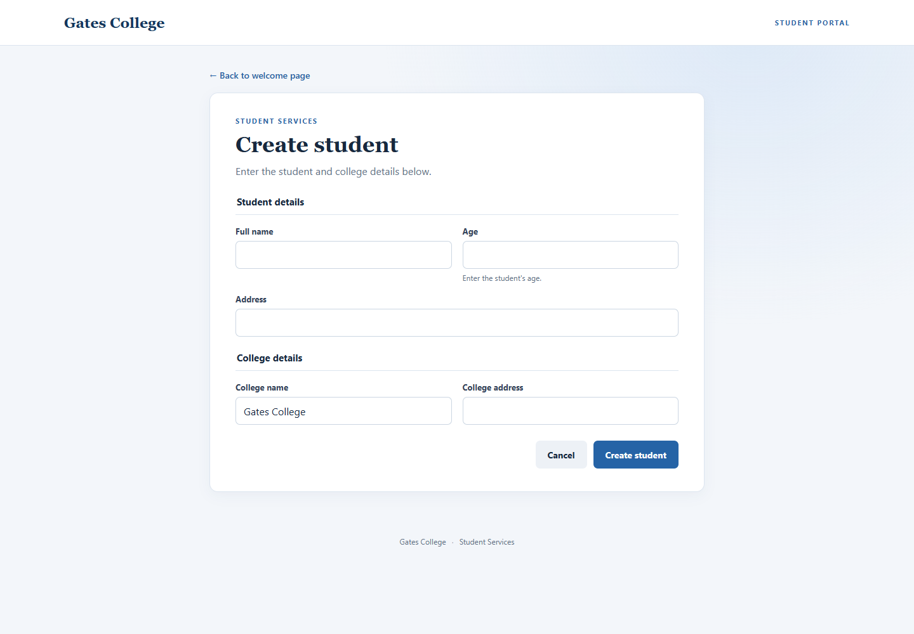
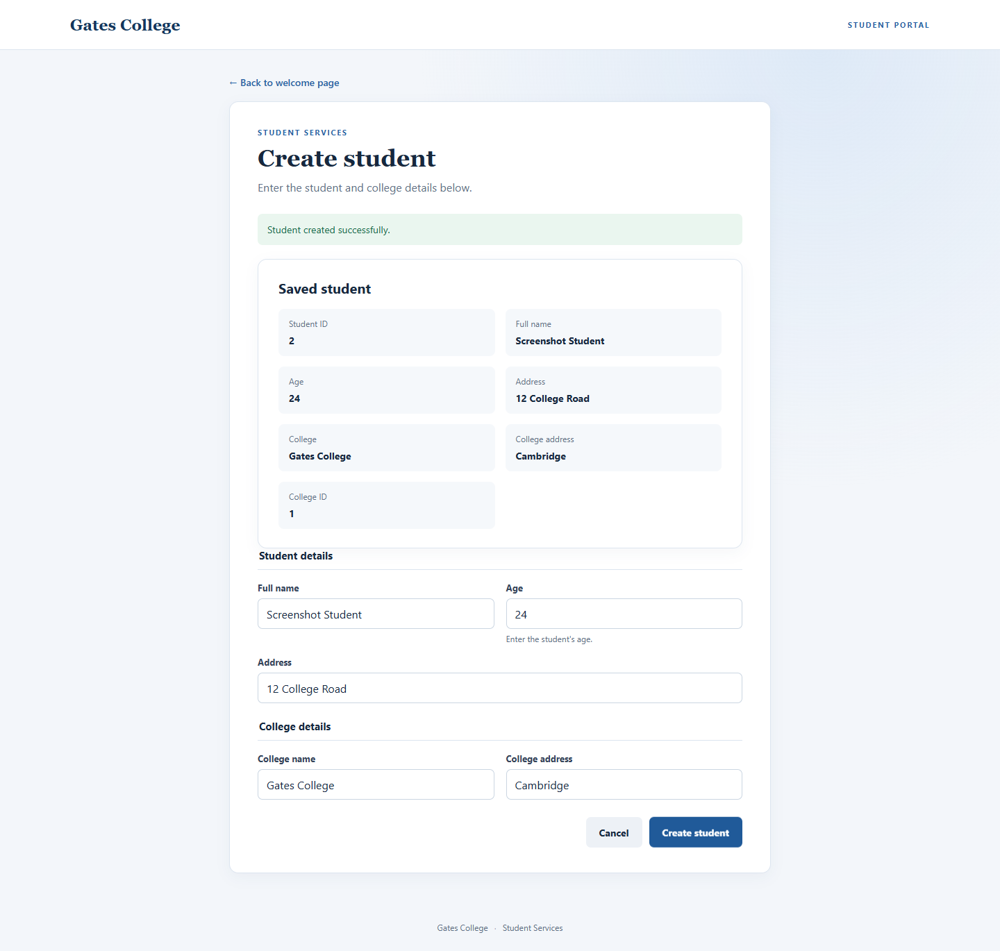
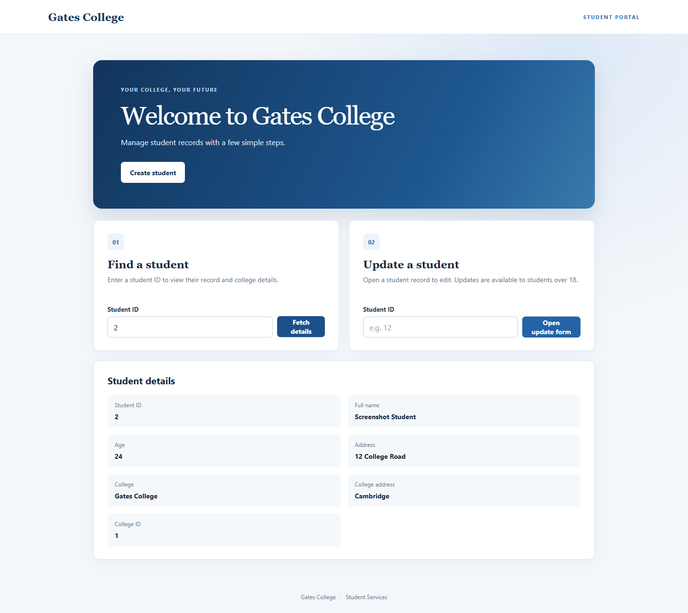
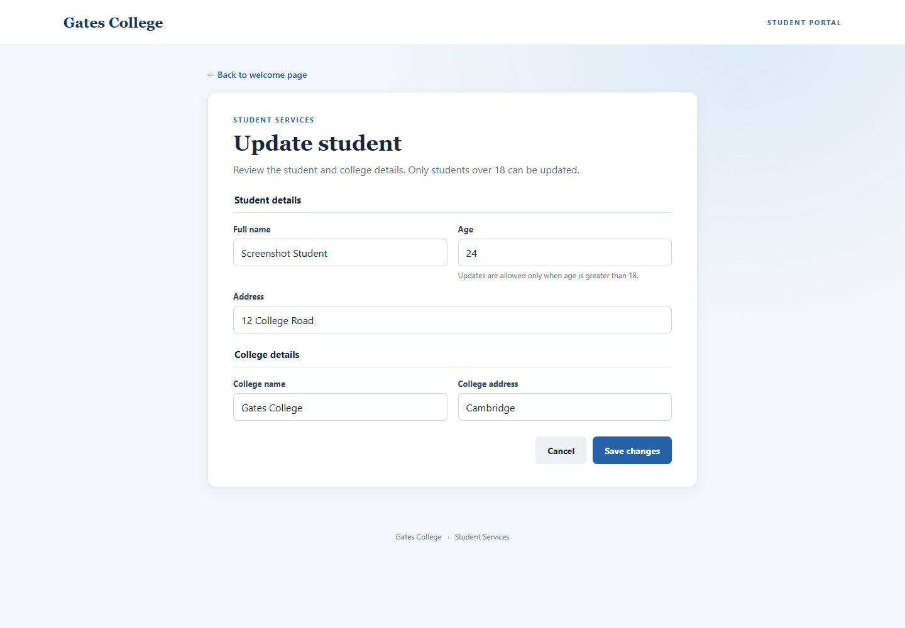
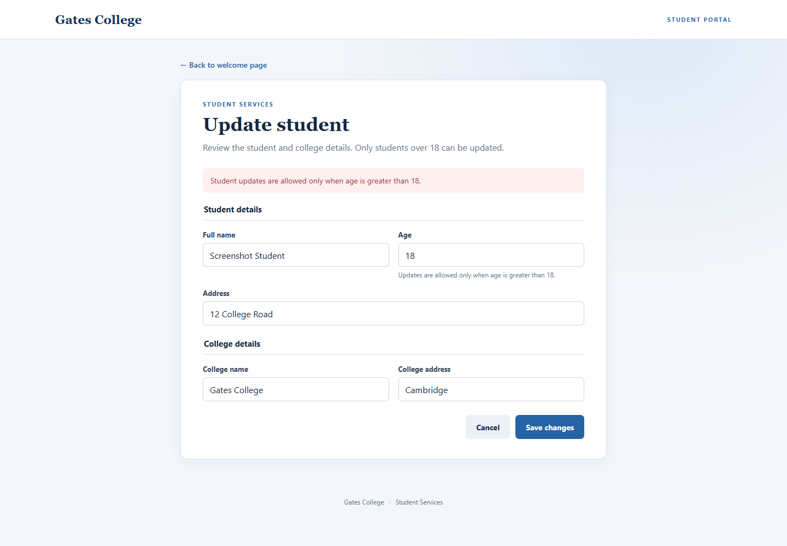
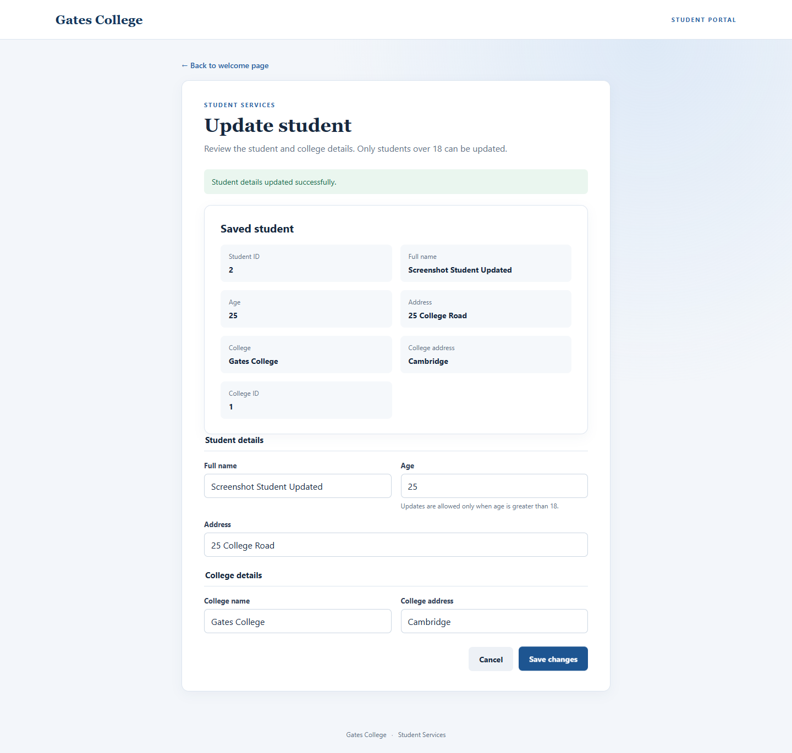
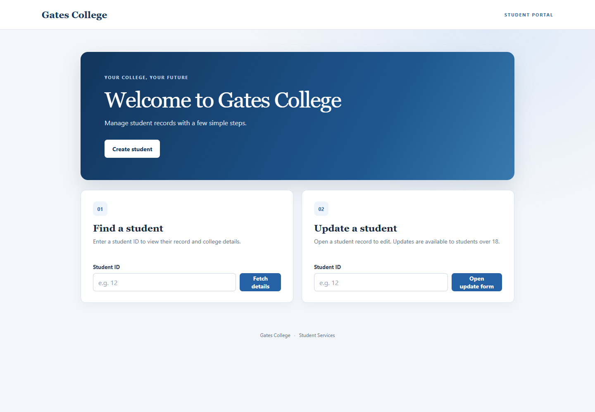

UI and endpoint test results · 2 November 2026
| Test suite | Passed | Failed | Result |
|---|---|---|---|
| StudentControllerTests | 13 | 0 | PASS |
| StudentCollegeRelationshipTests | 1 | 0 | PASS |
| SpringbootOpenshitMysqlDemoApplicationTests | 1 | 0 | PASS |
| Total | 15 | 0 | PASS |
| Scenario | Request / result | Status | Result |
|---|---|---|---|
| Welcome page and create action | Page renders welcome message and actions | HTTP 200 | PASS |
| Open create-student form | Create button opens student and college fields with Submit and Cancel actions | Page navigation | PASS |
| Create student | POST /students — student created with Gates College (student ID 2, college ID 1) | HTTP 201 | PASS |
| Fetch student by ID | GET /students/2 — student and college details displayed | HTTP 200 | PASS |
| Open update form by ID | GET /students/2 — existing student and college populate the form | HTTP 200 | PASS |
| Reject age 18 update | Form displays the over-18 requirement and does not send an update | Client validation | PASS |
| Update student over age 18 | PUT /students/2 — updated name/address; college association retained | HTTP 200 | PASS |
| Cancel create form | Cancel returns to the welcome page | Page navigation | PASS |






